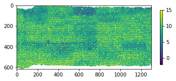
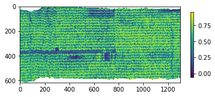
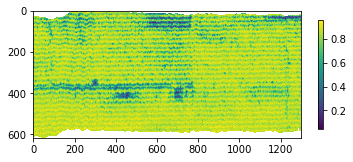

8.1.5. segment¶
-
class
hs_process.segment(spyfile)[source]¶ Bases:
objectClass for aiding in the segmentation and/or masking of image data to filter out pixels that are of least interest.
Methods Summary
band_math_derivative([wl1, wl2, wl3, b1, ...])Calculates a derivative-type spectral index from two input bands and/or wavelengths.
band_math_mcari2([wl1, wl2, wl3, b1, b2, ...])Calculates the MCARI2 (Modified Chlorophyll Absorption Ratio Index Improved; Haboudane et al., 2004) spectral index from three input bands and/or wavelengths.
band_math_ndi([wl1, wl2, b1, b2, spyfile, ...])Calculates a normalized difference spectral index from two input bands and/or wavelengths.
band_math_ratio([wl1, wl2, b1, b2, spyfile, ...])Calculates a simple ratio spectral index from two input band and/or wavelengths.
load_spyfile(spyfile)Loads a
SpyFile(Spectral Python object) for data access and/or manipulation by thehstoolsclass.Methods Documentation
-
band_math_derivative(wl1=None, wl2=None, wl3=None, b1=None, b2=None, b3=None, spyfile=None, list_range=True, print_out=True)[source]¶ Calculates a derivative-type spectral index from two input bands and/or wavelengths. Bands/wavelengths can be input as two individual bands, two sets of bands (i.e., list of bands), or range of bands (i.e., list of two bands indicating the lower and upper range).
- Definition:
array_der = (
wl1-wl2) / (wl2-wl3)
- Parameters
wl1 (
int,float, orlist) -- the wavelength (or set of wavelengths) to be used as the first parameter of the derivative index; iflist, then consolidates all bands between two wavelength values by calculating the mean pixel value across all bands in that range (default:None).wl2 (
int,float, orlist) -- the wavelength (or set of wavelengths) to be used as the second parameter of the derivative index; iflist, then consolidates all bands between two wavelength values by calculating the mean pixel value across all bands in that range (default:None).wl3 (
int,float, orlist) -- the wavelength (or set of wavelengths) to be used as the third parameter of the derivative index; iflist, then consolidates all bands between two wavelength values by calculating the mean pixel value across all bands in that range (default:None).b1 (
int,float, orlist) -- the band (or set of bands) to be used as the first parameter of the derivative index; iflist, then consolidates all bands between two band values by calculating the mean pixel value across all bands in that range (default:None).b2 (
int,float, orlist) -- the band (or set of bands) to be used as the second parameter of the derivative index; iflist, then consolidates all bands between two band values by calculating the mean pixel value across all bands in that range (default:None).b3 (
int,float, orlist) -- the band (or set of bands) to be used as the third parameter of the derivative index; iflist, then consolidates all bands between two band values by calculating the mean pixel value across all bands in that range (default:None).spyfile (
SpyFileobject ornumpy.ndarray) -- The datacube to crop; ifnumpy.ndarrayorNone, loads band information fromself.spyfile(default:None).list_range (
bool) -- Whether bands/wavelengths passed as a list is interpreted as a range of bands (True) or for each individual band in the list (False). Iflist_rangeisTrue,b1/wl1andb2/wl2should be lists with two items, and all bands/wavelegths between the two values will be used (default:True).print_out (
bool) -- Whether to print out the actual bands and wavelengths being used in the NDI calculation (default:True).
- Returns
2-element
tuplecontainingarray_der (
numpy.ndarray): Derivative band math array.metadata (
dict): Modified metadata describing the derivative array (array_der).
Example
Load
hsioandsegmentmodules>>> import numpy as np >>> from hs_process import hsio >>> from hs_process import segment >>> fname_in = r'F:\nigo0024\Documents\hs_process_demo\Wells_rep2_20180628_16h56m_pika_gige_7-Convert Radiance Cube to Reflectance from Measured Reference Spectrum.bip.hdr' >>> io = hsio(fname_in) >>> my_segment = segment(io.spyfile)
Calculate the MERIS Terrestrial Chlorophyll Index (MTCI; Dash and Curran, 2004) via
segment.band_math_derivative>>> array_mtci, metadata = my_segment.band_math_derivative(wl1=754, wl2=709, wl3=681, spyfile=io.spyfile) Bands used (``b1``): [176] Bands used (``b2``): [154] Bands used (``b3``): [141] Wavelengths used (``b1``): [753.84] Wavelengths used (``b2``): [708.6784] Wavelengths used (``b3``): [681.992]
>>> array_mtci.shape (617, 1300) >>> np.nanmean(array_mtci) 9.401104
Show MTCI image via
hsio.show_img>>> io.show_img(array_mtci, vmin=-2, vmax=15)
-
band_math_mcari2(wl1=None, wl2=None, wl3=None, b1=None, b2=None, b3=None, spyfile=None, list_range=True, print_out=True)[source]¶ Calculates the MCARI2 (Modified Chlorophyll Absorption Ratio Index Improved; Haboudane et al., 2004) spectral index from three input bands and/or wavelengths. Bands/wavelengths can be input as two individual bands, two sets of bands (i.e., list of bands), or range of bands (i.e., list of two bands indicating the lower and upper range).
- Definition:
array_mcari2 = ((1.5 * (2.5 * (
wl1-wl2) - 1.3 * (wl1-wl3))) / np.sqrt((2 *wl1+ 1)**2 - (6 *wl1- 5 * np.sqrt(wl2)) - 0.5))
- Parameters
wl1 (
int,float, orlist) -- the wavelength (or set of wavelengths) to be used as the first parameter of the MCARI2 index; iflist, then consolidates all bands between two wavelength values by calculating the mean pixel value across all bands in that range (default:None).wl2 (
int,float, orlist) -- the wavelength (or set of wavelengths) to be used as the second parameter of the MCARI2 index; iflist, then consolidates all bands between two wavelength values by calculating the mean pixel value across all bands in that range (default:None).wl3 (
int,float, orlist) -- the wavelength (or set of wavelengths) to be used as the third parameter of the MCARI2 index; iflist, then consolidates all bands between two wavelength values by calculating the mean pixel value across all bands in that range (default:None).b1 (
int,float, orlist) -- the band (or set of bands) to be used as the first parameter of the MCARI2 index; iflist, then consolidates all bands between two band values by calculating the mean pixel value across all bands in that range (default:None).b2 (
int,float, orlist) -- the band (or set of bands) to be used as the second parameter of the MCARI2 index; iflist, then consolidates all bands between two band values by calculating the mean pixel value across all bands in that range (default:None).b3 (
int,float, orlist) -- the band (or set of bands) to be used as the third parameter of the MCARI2 index; iflist, then consolidates all bands between two band values by calculating the mean pixel value across all bands in that range (default:None).spyfile (
SpyFileobject ornumpy.ndarray) -- The datacube to crop; ifnumpy.ndarrayorNone, loads band information fromself.spyfile(default:None).list_range (
bool) -- Whether bands/wavelengths passed as a list is interpreted as a range of bands (True) or for each individual band in the list (False). Iflist_rangeisTrue,b1/wl1andb2/wl2should be lists with two items, and all bands/wavelegths between the two values will be used (default:True).print_out (
bool) -- Whether to print out the actual bands and wavelengths being used in the NDI calculation (default:True).
- Returns
2-element
tuplecontainingarray_mcari2 (
numpy.ndarray): MCARI2 spectral index band math array.metadata (
dict): Modified metadata describing the MCARI2 index array (array_mcari2).
Example
Load
hsioandsegmentmodules>>> from hs_process import hsio >>> from hs_process import segment >>> fname_in = r'F:\nigo0024\Documents\hs_process_demo\Wells_rep2_20180628_16h56m_pika_gige_7-Convert Radiance Cube to Reflectance from Measured Reference Spectrum.bip.hdr' >>> io = hsio(fname_in) >>> my_segment = segment(io.spyfile)
Calculate the MCARI2 spectral index (Haboudane et al., 2004) via
segment.band_math_mcari2>>> array_mcari2, metadata = my_segment.band_math_mcari2(wl1=800, wl2=670, wl3=550, spyfile=io.spyfile) Bands used (``b1``): [198] Bands used (``b2``): [135] Bands used (``b3``): [77] Wavelengths used (``b1``): [799.0016] Wavelengths used (``b2``): [669.6752] Wavelengths used (``b3``): [550.6128]
>>> np.nanmean(array_mcari2) 0.57376945
Show MCARI2 image via
hsio.show_img>>> io.show_img(array_mcari2)
-
band_math_ndi(wl1=None, wl2=None, b1=None, b2=None, spyfile=None, list_range=True, print_out=True)[source]¶ Calculates a normalized difference spectral index from two input bands and/or wavelengths. Bands/wavelengths can be input as two individual bands, two sets of bands (i.e., list of bands), or range of bands (i.e., list of two bands indicating the lower and upper range).
- Definition:
array_ndi = (
wl1-wl2) / (wl1+wl2)
- Parameters
wl1 (
int,float, orlist) -- the wavelength (or set of wavelengths) to be used as the first parameter of the normalized difference index; iflist, then consolidates all bands between two wavelength values by calculating the mean pixel value across all bands in that range (default:None).wl2 (
int,float, orlist) -- the wavelength (or set of wavelengths) to be used as the second parameter of the normalized difference index; iflist, then consolidates all bands between two wavelength values by calculating the mean pixel value across all bands in that range (default:None).b1 (
int,float, orlist) -- the band (or set of bands) to be used as the first parameter of the normalized difference index; iflist, then consolidates all bands between two band values by calculating the mean pixel value across all bands in that range (default:None).b2 (
int,float, orlist) -- the band (or set of bands) to be used as the second parameter of the normalized difference index; iflist, then consolidates all bands between two band values by calculating the mean pixel value across all bands in that range (default:None).spyfile (
SpyFileobject ornumpy.ndarray) -- The datacube to crop; ifnumpy.ndarrayorNone, loads band information fromself.spyfile(default:None).list_range (
bool) -- Whether bands/wavelengths passed as a list is interpreted as a range of bands (True) or for each individual band in the list (False). Iflist_rangeisTrue,b1/wl1andb2/wl2should be lists with two items, and all bands/wavelegths between the two values will be used (default:True).print_out (
bool) -- Whether to print out the actual bands and wavelengths being used in the NDI calculation (default:True).
- Returns
2-element
tuplecontainingarray_ndi (
numpy.ndarray): Normalized difference band math array.metadata (
dict): Modified metadata describing the normalized difference array (array_ndi).
Example
Load
hsioandsegmentmodules>>> from hs_process import hsio >>> from hs_process import segment >>> fname_in = r'F:\nigo0024\Documents\hs_process_demo\Wells_rep2_20180628_16h56m_pika_gige_7-Convert Radiance Cube to Reflectance from Measured Reference Spectrum.bip.hdr' >>> io = hsio(fname_in) >>> my_segment = segment(io.spyfile)
Calculate the Normalized difference vegetation index using 10 nm bands centered at 800 nm and 680 nm via
segment.band_math_ndi>>> array_ndvi, metadata = my_segment.band_math_ndi(wl1=[795, 805], wl2=[675, 685], spyfile=io.spyfile) Bands used (``b1``): [197, 198, 199, 200] Bands used (``b2``): [138, 139, 140, 141, 142] Wavelengths used (``b1``): [796.9488, 799.0016, 801.0544, 803.1072] Wavelengths used (``b2``): [675.8336, 677.8864, 679.9392, 681.992, 684.0448] >>> np.nanmean(array_ndvi) 0.8184888
Show NDVI image via
hsio.show_img>>> io.show_img(array_ndvi)
-
band_math_ratio(wl1=None, wl2=None, b1=None, b2=None, spyfile=None, list_range=True, print_out=True)[source]¶ Calculates a simple ratio spectral index from two input band and/or wavelengths. Bands/wavelengths can be input as two individual bands, two sets of bands (i.e., list of bands), or a range of bands (i.e., list of two bands indicating the lower and upper range).
- Definition:
array_ratio = (
wl1/wl2)
- Parameters
wl1 (
int,float, orlist) -- the wavelength (or set of wavelengths) to be used as the first parameter of the normalized difference index; iflist, then consolidates all bands between two wavelength values by calculating the mean pixel value across all bands in that range (default:None).wl2 (
int,float, orlist) -- the wavelength (or set of wavelengths) to be used as the second parameter of the normalized difference index; iflist, then consolidates all bands between two wavelength values by calculating the mean pixel value across all bands in that range (default:None).b1 (
int,float, orlist) -- the band (or set of bands) to be used as the first parameter (numerator) of the ratio index; iflist, then consolidates all bands between two band values by calculating the mean pixel value across all bands in that range (default:None).b2 (
int,float, orlist) -- the bands (or set of bands) to be used as the second parameter (denominator) of the ratio index; iflist, then consolidates all bands between two bands values by calculating the mean pixel value across all bands in that range (default:None).spyfile (
SpyFileobject ornumpy.ndarray) -- The datacube to crop; ifnumpy.ndarrayorNone, loads band information fromself.spyfile(default:None).list_range (
bool) -- Whether a band passed as a list is interpreted as a range of bands (True) or for each individual band in the list (False). Iflist_rangeisTrue,b1/wl1andb2/wl2should be lists with two items, and all bands/wavelegths between the two values will be used (default:True).print_out (
bool) -- Whether to print out the actual bands and wavelengths being used in the NDI calculation (default:True).
- Returns
2-element
tuplecontainingarray_ratio (
numpy.ndarray): Ratio band math array.metadata (
dict): Modified metadata describing the ratio array (array_ratio).
Example
Load
hsioandsegmentmodules>>> from hs_process import hsio >>> from hs_process import segment >>> fname_in = r'F:\nigo0024\Documents\hs_process_demo\Wells_rep2_20180628_16h56m_pika_gige_7-Convert Radiance Cube to Reflectance from Measured Reference Spectrum.bip.hdr' >>> io = hsio(fname_in) >>> my_segment = segment(io.spyfile)
Calculate a red/near-infrared band ratio using a range of bands (i.e., mimicking a broadband sensor) via
segment.band_math_ratio>>> array_ratio, metadata = my_segment.band_math_ratio(wl1=[630, 690], wl2=[800, 860], list_range=True) Bands used (``b1``): [116, 117, 118, 119, 120, 121, 122, 123, 124, 125, 126, 127, 128, 129, 130, 131, 132, 133, 134, 135, 136, 137, 138, 139, 140, 141, 142, 143, 144] Bands used (``b2``): [199, 200, 201, 202, 203, 204, 205, 206, 207, 208, 209, 210, 211, 212, 213, 214, 215, 216, 217, 218, 219, 220, 221, 222, 223, 224, 225, 226, 227] Wavelengths used (``b1``): [630.672, 632.7248, 634.7776, 636.8304, 638.8832, 640.936, 642.9888, 645.0416, 647.0944, 649.1472, 651.2, 653.2528, 655.3056, 657.3584, 659.4112, 661.464, 663.5168, 665.5696, 667.6224, 669.6752, 671.728, 673.7808, 675.8336, 677.8864, 679.9392, 681.992, 684.0448, 686.0976, 688.1504] Wavelengths used (``b2``): [801.0544, 803.1072, 805.16, 807.2128, 809.2656, 811.3184, 813.3712, 815.424, 817.4768, 819.5296, 821.5824, 823.6352, 825.688, 827.7408, 829.7936, 831.8464, 833.8992, 835.952, 838.0048, 840.0576, 842.1104, 844.1632, 846.216, 848.2688, 850.3216, 852.3744, 854.4272, 856.48, 858.5328] (659/830)
>>> np.nanmean(array_ratio) 0.10981177
Notice that 29 spectral bands were consolidated (i.e., averaged) to mimic a single broad band. We can take the mean of two bands by changing
list_rangetoFalse, and this slightly changes the result.>>> array_ratio, metadata = my_segment.band_math_ratio(wl1=[630, 690], wl2=[800, 860], list_range=False) Bands used (``b1``): [116, 145] Bands used (``b2``): [198, 228] Wavelengths used (``b1``): [630.672, 690.2032] Wavelengths used (``b2``): [799.0016, 860.5856] (660/830) >>> np.nanmean(array_ratio) 0.113607444
Show the red/near-infrared ratio image via
hsio.show_img>>> io.show_img(array_ratio, vmax=0.3)
-
load_spyfile(spyfile)[source]¶ Loads a
SpyFile(Spectral Python object) for data access and/or manipulation by thehstoolsclass.- Parameters
spyfile (
SpyFileobject) -- The datacube being accessed and/or manipulated.
Example
Load
hsioandsegmentmodules>>> from hs_process import hsio >>> from hs_process import segment >>> fname_in = r'F:\nigo0024\Documents\hs_process_demo\Wells_rep2_20180628_16h56m_pika_gige_7-Convert Radiance Cube to Reflectance from Measured Reference Spectrum.bip.hdr' >>> io = hsio(fname_in) >>> my_segment = segment(io.spyfile)
Load datacube via
segment.load_spyfile>>> my_segment.load_spyfile(io.spyfile) >>> my_segment.spyfile Data Source: 'F:\nigo0024\Documents\hs_process_demo\Wells_rep2_20180628_16h56m_pika_gige_7-Convert Radiance Cube to Reflectance from Measured Reference Spectrum.bip' # Rows: 617 # Samples: 1300 # Bands: 240 Interleave: BIP Quantization: 32 bits Data format: float32
-